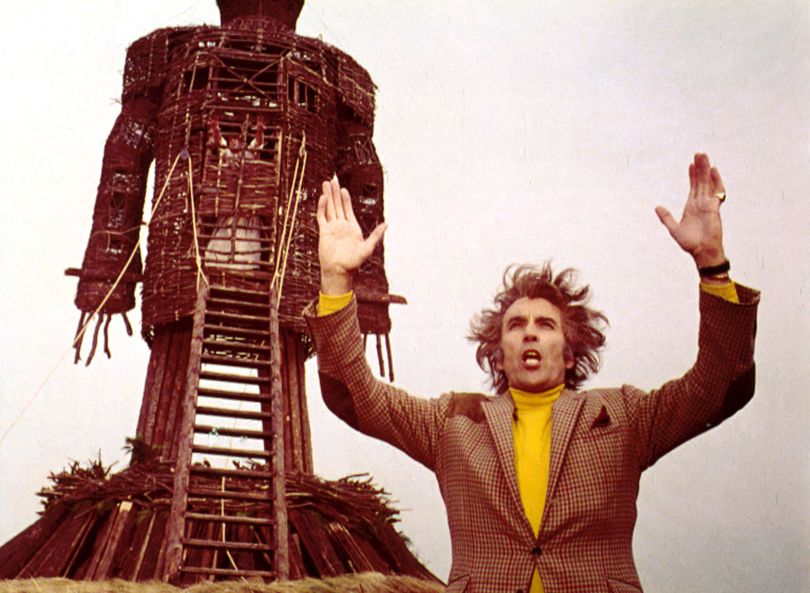

November 26, 2022
When the sun falls in the house of secrets, places of confinement, and self-undoing, you are both blessed and cursed with the qualities you need to survive this poorly understood house of astrology.
People with Sun in the twelfth house are sensitive, intuitive, and perhaps even psychic. They inhabit a world of sensations and impressions that can either be so subtle as to be almost imperceptible, or so overwhelming that they feel lost and confused. They struggle to know who they are because their sense of identity changes depending on who or what they are around.
The twelfth house governs what remains when the concerns of the outer world are stripped away. Confinement to monasteries, asylums, prisons, and hospitals serves to direct attention away from wordly cares into the subtle gradations of inner experience that only become perceptible in isolation. It is in these quiet moments that twelfth house suns come to know themselves.
People withe twelfth house suns are faced with a cirsis of identity. The sun, which governs the conscious, rational aspects of the personality, falls in the house that governs unsconsiousness, irrationality, and intangibility. The conscious center of the personality is unusually receptive to unconscious information, which is experienced in the form of abstract impressions, intuitions, reveries, and dreams. People with sun in the twelfth house may feel as though they are constantly moving through a strange dream that shifts and changes depending on their environment. Making sense of this information can be increadibbly challenging, and it begs the question: how can I define myself as an individual while remaining receptive to the overwhelming unconscious information that I am constantly taking in?
It becomes necessary for people with this placement to discover what remains constant within them. They may wonder: which of my experiences and assumptions are coming from other people, and which are coming from within me? What is the difference between what is "within" and what is "without?" How do they influence each other? The fundamental question is whether or not people with twelfth house suns can form an identity around their inner reality. If they can't, they will suffer.
It is often said that residents of this house must either serve others or suffer. A true life of service is a life lived acknowledging the oneness of all beings, which is the ultimate fate of this placement, but you don't have to surrender healthy boundaries in order to do so. In fact, quite the opposite is true. Healthy boundaries indicate that you are in touch with how you truly feel, which is the same as being in touch with your "true self."
Once you discover your true thoughts and feelings, and practice living a life that is in harmony with your genuine needs, selfish desires and behaviors will begin to fall away on their own, and you will have greater capacity to serve others. This is easier said than done of course, but this placement ensures that you will have many opportunities to do so. The twelfth house is associated with self-undoing, but this is really a misguided way of thinking about the process that destroys the "false self." If you identify with the false self, which exists to protect you from perceived harm, this process will be very painful, but it is only through this pain that you can discover what remains after everything false is stripped away.
In the 1973 British folk horror film The Wicker Man, a police officer is sent to investigate a crime on a remote Scottish isle where he is led to his death by the pagan townspeople. After a series of strange and disorienting interactions with the locals, he is locked inside a large wooden cage built in the likeness of a man and burned alive as a sacrifice to the fertility gods of the island. While terrifying and bizarre, this story nudges at the initiatory process that underpins the strange logic of the twelfth house. The "false self"--the police officer, out of touch with his primal feelings and needs--is led to his death because he is unable to recognize his connection to the natural laws and spiritual forces that govern the natural world. Perhaps if he had been more in touch with his own primitive urges, he could have sensed and avoided his unfortunate fate. This story itself is a brutal one, but as a metaphor, it touches on something true and useful: learn to see the connection between yourself and the world around you, in all of its apparent savagery, brutality, strangeness, and mystery, or perish on the alter of the "false self."
You may have planets in the twelfth house.
Click to find out more!